Introducción
I. Aspectos Generales de Argentina
Argentina es un país con una extensión de
2.780.400 km2, es decir, un territorio 2,43 veces
más grande que Colombia; es el segundo país
suramericano más grande después de Brasil, el
cuarto del Continente Americano y el octavo del
mundo. Según el Instituto Nacional de Estadística
y Censos de la República de Argentina tiene una
población estimada de 45.376.763 habitantes,
comparativamente menor a la población colombiana
para el mismo año (INDEC, 2019). Su geografía se caracteriza por una vasta llanura, aunque al
occidente sobresale la Cordillera de los Andes.
Su forma de Estado lo constituye una República
Federal. Las principales ciudades son Buenos Aires
(capital), Córdoba, Rosario, La Plata y San Miguel
de Tucumán. (Ministerio de Asuntos Exteriores,
Unión Europea y de Cooperación, 2019).
1. Caracterización de laEconomíaArgentina
Argentina ha sido durante varios periodos
de tiempo la tercera economía Latinoamericana
después de Brasil y México según el PIB. Según reporte de la Comisión Económica para América
Latina (CEPAL), el Producto Interno Bruto para
el año 2018 fue de US $519.872 y una tasa de
crecimiento de -2,5% respecto al año 2017 como
efecto de la difícil situación que afronta el país para
el periodo de referencia. Su ingreso per cápita fue de
US $11.677 y participa con el 9,6% del PIB regional
en el 2018. Esta situación ha empeorado, descripción
que se hace en el análisis de la década 2010 – 2019.
Aunque este país es reconocido por su fuerte
sector agroexportador en granos y carnes, el sector
servicios es el más importante en su economía. Por
sectores económicos, el terciario representa el 63.7%,
seguido del secundario con el 26,5% y finalmente el
sector primario con el 9,8%. En el sector terciario
sobresalen las actividades de administración pública
con el 24,2%, seguida del comercio con el 17,7%
y la intermediación financiera 16,8%. En el sector
secundario sobresale la industria manufacturera con
el 15% del PIB, y el sector primario participa con el
7,2% en agricultura y 4,5% en la minería. (CEPAL,
2020).
1.1. Sector Primario:
La economía de Argentina se caracteriza por
tener potencialidades en el sector agrícola, según el
Censo Nacional Agropecuario 2018 cuenta con una
superficie de 37.411.993 hectáreas. Sus principales
cultivos eran para este registro soja, maíz, trigo,
girasol, cebada y sorgo; estos productos se cultivan
en 34.390.000 hectáreas y contabilizaron una
producción nacional de 137.000.000 de toneladas.
Por áreas cultivadas el 38,5%representan oleaginosas
(soja y girasol), el 30,4% cereales, el 2,4% cultivos
industriales, el 1,4% frutales, el 0,4% hortalizas. Se
destaca que el 21,2% del área está dedicada a cultivos
de forrajeras dedicadas a la actividad ganadera,
donde también se produce alfalfa, avena, sorgo,
cebada y centeno. (Instituto Nacional de Estadísticas
y Censos, 2020).
Este país es un actor mundial en este renglón;
por ejemplo: Es el primer exportador mundial de harina y aceite de soja, aceite y manufactura de
maní, jugo y aceite esencial de limón, fruta fresca
y yerba mate. Igualmente es el segundo exportador
mundial de limones frescos y mosto de la uva. Es
el tercer exportador mundial de maíz, ajo, aceites
y grasas, harina y aceite de girasol. Es el cuarto
exportador mundial de aceite de oliva, el quinto
exportador mundial de trigo y maní y el octavo
exportador mundial de semilla de girasol. Sobresalen
las provincias de Buenos Aires, Córdoba y Santa Fé,
Santiago del Estero, Entre Ríos, La Pampa, Chaco,
Salta, San Luis y Tucumán como las principales
productoras agrícolas. (El sur del Sur, 2020).
1.2 Sector Industrial
Argentina como la mayoría de los países
latinoamericanos florece en su sector industrial a
comienzos del Siglo XIX. La participación dentro
del PIB pasó a ser ya del 15,35% en la primera
década del Siglo XX, hasta la época dorada en
los años 60 donde casi llegó a representar el 30%
de la producción nacional. Ello como resultado
del proceso de sustitución de importaciones que
vivieron muchos países del continente. Sin embargo,
a partir de los años 70 ‘s al igual que otros países,
hay un cambio hacia una pérdida de crecimiento o
importancia en el PIB, al punto que en los años 90’
s su participación cae a los niveles de los años 40´s.
(Kosacoff, 1993).
En sus primeros inicios surgen las
transformaciones hacia bienes de consumo, dar
valor agregado a las materias primas básicas; la
rápida cualificación de la mano de obra técnica y
profesional; el cierre de los mercados en la Segunda
Guerra Mundial y el creciente mercado interno,
fueron motores en sectores como: Confección y
textiles, alimentos, electrodomésticos, máquinas y
metalúrgicassencillas, la industria de la construcción,
el mantenimiento ferroviario, máquinas agrícolas e
industrias de base, hicieron ganar el reconocimiento
de una economía pujante, hasta avanzar a procesos
más complejos como el petroquímico e industria automotriz.
Ya en 1975 la cuarta parte de las exportaciones
del país estaban representadas en las manufacturas
no tradicionales. Pero los cambios hacia 1978 con
una economía más orientada al mercado, desmontó
el proteccionismo hacia el sector y aquellas
empresas con debilidades en competitividad
sufrieron al punto de desaparecer ante los productos
importados (CEPAL, 1993). A partir del Siglo XXI
Argentina experimenta un constante crecimiento de
su sector industrial, al punto que en los primeros
años su participación en el PIB vuelve a superar
el 20%. (Herrera, Tavosnanska, 2011). Hoy se
destacan los sectores metalmecánicos o intensivos
en ingeniería. Su economía se ha catalogado como
semi-industrializada.
2. Antecedentes de la Economía Argentina:
Sus inicios recientes Siglo XIX
Argentina ha sido una de las economías más
fuertes y vigorosas que ha existido a nivel regional
en la historia reciente. Sin embargo, algún rasgo que
caracteriza el pasado colonial de Buenos Aires era
el reconocido puerto legal e ilegal de esclavos en las
rutas comerciales desde Europa con origen en África.
Comercio dominado por España e Inglaterra, con
destino hacia el interior del continente americano
(Gonzales, 2015). España dueña del negocio de
esclavos por la época de la conquista y colonia del
Nuevo Mundo concedió el Asiento de Negros a los
genoveses, portugueses y franceses, pero el Tratado
de Utrecht de 1714 concedió este monopolio a
los ingleses; tratado que posteriormente dará a
Inglaterra influencia en esta zona del continente, al
fortalecer las relaciones comerciales y diplomáticas
en el periodo post independencia. (Montagut, 2013).
Así mismo, para Rojas (2003) y Macías (2002)
este país desarrolló desde sus inicios un interesante
mercado doméstico entre los años 1860 y 1930,
periodo con un fuerte crecimiento, modernización
y una gran estabilidad política. Esta época fue
impredecible para el pueblo argentino debido a su
fuerte ola de emigrantes del sur de Europa donde
buscaban instalarse y tener un nivel de vida estable, los suelos fértiles ayudaron a consolidar el panorama
internacional con mercados europeos, gracias a los
vapores transoceánicos. Su centro de desarrollo se
daba en la zona noroeste del país tales como, Salta,
Tucumán, Santiago del Estero y Catamarca, tanto así
que alrededor de dos tercios de la Población indígena
de la Argentina vivía allí, y la región exportaba
animales de carga, comestibles y artesanías en
grandes cantidades a las ricas comarcas montañosas
de Bolivia.
Rojas, explica que el ganado en su mayoría
ganado cimarrón, tuvo su expansión con rapidez
por las pampas, y grandes ranchos ganaderos. Estas
instancias abarcaban miles de hectáreas de tierra,
donde el cuero principalmente era casi el único
producto en ese momento, la región se hallaba
en buenas condiciones para comercializar con
los mercados de Europa. En su entonces la actual
capital del pueblo argentino tuvo la oportunidad de
convertirse en un gran centro de desarrollo portuario
marítimo, que dio al pueblo inglés el poder del
comercio con esclavos en Hispanoamérica y que, a
su vez, la provincia del sur sería canalizado a través
de Buenos Aires.
Esto a su vez le daba tener el privilegio de obtener
más ingresos a causa de las altas importaciones de
esclavos, convirtiéndose como el mayor sector de
Importación más grande de Hispanoamérica, con
una población de 11.000 habitantes. Sin embargo,
a pesar del gran comercio, Argentina seguía con
una población escasa alrededor del siglo XX, con
diversas tribus indígenas que predominaban entre
otros lugares la mayor parte del sur del pueblo
argentino y grandes partes de la región pampeana.
En esa época, la población sin incluir a los
indígenas libres, alcanzaba cerca de 350.000
personas, de las cuales 150.000 vivían en la zona
noroeste, 100.000 en otras partes del interior y otras
100.000 en la costa.
Argentina incidió sobre los procesos
independentistas, cabe recordar que el Virreinato del Río de la Plata, son los hoy territorios de
Argentina, Uruguay, Paraguay y Bolivia. El proceso
que debió pasar Argentina por su independencia de
Hispanoamérica, no fue tan fácil, las relaciones con
Inglaterra, y con otros países europeos, infundió
en las nuevas ideas y formas de pensar en Buenos
Aires, y la elite nacional. La época post colonial
presenta conflictos internos y regionales y luchas
de los terratenientes contra los indígenas. Expulsión
que sumó extensas porciones de territorio, que
posteriormente, amplió la frontera agrícola y
producción vacuna e impulsó el auge de las
exportaciones, fruto del crecimiento en la producción
y en el sector de comercio.
Algunos factores que se destacan en este
periodo: a) El aumento de compras desde europea
de productos alimenticios y materias primas; b) Los
nuevos medios de transporte, la comercialización
de los recursos naturales fácilmente exportables en
grandes cantidades y la llegada de mano de obra
inmigrante del sur de Europa y arribo de inversión
extranjera; c) Una gran estabilidad política alcanzada
a partir de 1861.
Las cifras que corroboran esa expansión son la
extensión total de hectáreas del sector agrícola que
pasó de 10 millones de Hectáreas a 51 millones en
1908. Para 1843 a 1884 el número de ganado pasó de
10 a 23 millones de cabezas. Los avances del sector
primario, destacan:
“Las tierras dedicadas a los cereales se
expandieron de 340.000 hectáreas en 1875 a 20
millones en 1913, y asimismo las exportaciones de
trigo crecieron de 179.000 toneladas, 3,6 millones
en 1908… ” (Rojas, 2003, pág., 23).
Otro factor se relaciona con el crecimiento de
infraestructura vial hacia 1914. Según el reporte
de cifras el crecimiento anual de la Economía
Argentina durante ese periodo se estimó entre 6%,
y 6,5% por encima del crecimiento promedio para
la época que era aproximado del 3,3%; lo que refleja
un avance importante en el crecimiento económico de la naciente República. Así mismo el crecimiento
población y de urbanización fueron fuerzas motrices
muy importantes en el cambio, tanto así que, a
principios del Siglo XX, Argentina era la segunda
nación más urbanizada después de Gran Bretaña.
No obstante, también se cosechaban ya desde
principios del siglo los problemas de concentración
de la tierra, el ingreso y por consiguiente la riqueza,
con los impactos y desequilibrios entre la zona
urbana y la zona rural.
3. Políticas Económicas en Argentina Siglo
XX
3.1 Periodo 1930 -
Aunado al importante avance del sector
agropecuario, la naciente industria argentina de
principios de siglo presentaba hasta antes de la
crisis de 1929 un crecimiento promedio del 7%.
Para este periodo esta nación era el más importante
exportador de carne congelada y ocupaba el tercer
puesto mundial en exportaciones de trigo y harina.
Comercio exterior que permitió acumular grandes
reservas en oro y ubicar a Argentina como una
nación de altos ingresos y capacidad de consumo
en el entorno internacional. La naciente industria
y desarrollo empresarial, tiene una relación directa
con los inmigrantes europeos (Rojas, 2003).
El periodo entreguerra deterioro las condiciones
socioeconómicas logradas hasta el momento,
las rivalidades entre la clase política dominante
y la creciente masa obrera afloraron, con graves
repercusiones en la represión, que posteriormente
llevaron a Perón al poder de la mano de la clase
trabajadora años más tarde. Habría una alianza entre
los partidos de los trabajadores y la masa de obreros
(Barry, 2010)
A manera de contexto, es necesario retomar
el año 1930, donde se vio reflejado un contagio
económico a nivel mundial, esto también representó
un cambio profundo en la historia de la Argentina,
puesto que el motor de la Economía nacional, es decir, el sector agroexportador dejó de funcionar
en la manera en como lo había hecho hasta el año
1929. Así la Argentina próspera sufría ante sus ojos
la debacle económico. (Presidencia de la Nación,
2015)
La crisis Internacional de 1930 marcó el
comienzo de una sorprendente recesión económica
durante las décadas de 1930 y 1940, en el caso
argentino su recesión parte del colapso del sector
exportador, dada una caída de la demanda mundial
y un decrecimiento en más de un 60% de sus
precios de referencia. Ante esta crisis del sector
primario, la oportunidad surgiría para profundizar la
industrialización, ante la necesidad de sustituir las
importaciones. A la crisis mundial algunas medidas
de política económica del presidente de turno Jóse
Félix Uriburu y sus sucesores se pueden observar en
la Tabla No 1.
Tabla I. Políticas Económicas 1930
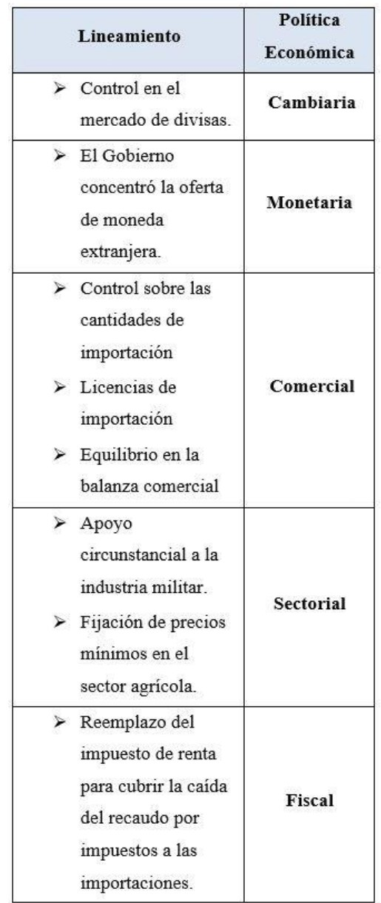
Fuente: Elaboración Propia. A partir de Rojas (2003)
Como se puede apreciar en la Tabla No 1
las medidas de política económica son: En lo
cambiario un régimen controlado bajo la orientación
del gobierno quien compraba los dólares a los
exportadores y determinaba y restringía según los
intereses del país a los importadores. En materia
sectorial, en especial de comercio exterior, ante
la caída del comercio internacional se aboga por
restringirlasimportaciones ante la escasez de divisas,
y por ello impone también un régimen de licencias,
para autorizar sólo aquellos productos que el
gobierno así lo considere necesario, a fin de procurar
el equilibrio de la balanza comercial; también se
aprecia en lo sectorial apoyo a la industria militar.
En materia Monetaria, establece precios mínimos
para el sector agrícola a fin de garantizar ingresos
mínimos al sector y garantizar la compra del Estado
a dichos precios. Y finalmente en materia fiscal, se
aprecia una medida impositiva-progresiva al mitigar
la caída en los recaudos fiscales vía importación, por
una ampliación en los impuestos de renta.
3.2Argentina en el Peronismo (1946-1955)
Juan Domingo Perón fue un militar que llegó
a ocupar la Secretaría de Trabajo en el gobierno de
Edelmiro Farrel en 1944 y posteriormente ocupó la
presidencia desde 1946 hasta su derrocamiento y
exilio en 1955 y posteriormente volvió al poder entre
octubre de 1973 y julio de 1974. Aquí se revisará el
período 1946- 1955.
El apoyo a Perón radica en el Partido Laborista
y Confederación General de Trabajo, así entonces el
sindicalismo tomó una participación activa durante
este periodo. En 1947 se funda el Partido Peronista
para unificar las fuerzas políticas con principios y
enfoque social (Barry, 2010).
En el mandato del coronel se crea un plan para
que Argentina fuera autárquica (independiente de
otras económicas para su desarrollo), este se convirtió
en la principal finalidad de la política económica
aplicada en 1946- 1948. La idea de llevar al país a este
punto fue causada por el escenario internacional, el período postguerra.(Rojas, 2003). Según los archivos
de la nación (Subsecretaría de Informaciones, 1953),
cabe destacar que Perón implementó visiones de
desarrollo plasmadas en sus Planes Quinquenales, es
decir una planificación centralizada desde el Estado.
Una visión de corte nacionalista; por su influencia
fascista proveniente de la Europa de Mussolini y de
Hitler, de los cuales era simpatizante; que a la postre
le traería problemas con los Estados Unidos por su
ya mencionada neutralidad durante la II G.M. Los
principales lineamientos de la política implementada
se evidencian en la Tabla No 2.
Tabla II. Tabla Políticas Económicas Peronistas
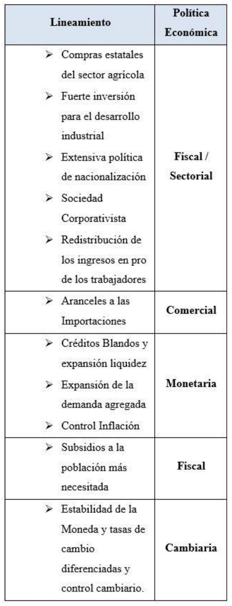
Fuente: Elaboración Propia.
Las políticas económicas durante el gobierno de
Perón se caracterizaron por mejorar las condiciones
de la base social, por ello una argentina con mayor
equidad necesitaba una política económica de
tipo sectorial y fiscal que permitiera una mejor
distribución de la riqueza.
El primer lineamiento fue aquel que le dio
mayor popularidad a Perón, al aplicar la política
de redistribución a favor de los asalariados (1946-
1952). La Gráfica 1 muestra esta tendencia.
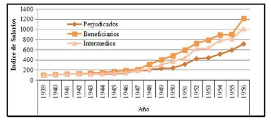
Gráfico 1. Índices de salarios de los sectores: Beneficiados, Intermedios y Perjudicados.
(1939-1956)
Tomado de: Newland, C y Cuesta, E (2017).
Peronismo y salarios reales: otra mirada al período
1939- 1956. Investigación y Ensayo. N°64. 75-98.
La segunda política económica de tipo sectorial,
contaba con la estrategia de acaparar recursos del
sector agrícola, a cargo de IAPI (Instituto Argentino
para la Promoción del Intercambio). Comprandoles
a los productores en el mercado local a un menor
precio en comparación a los precios internacionales
a los cuales finalmente los exportaba. Ello le
permitía al gobierno un flujo de dinero que apalancar
sus inversiones, por ejemplo en el sector industrial.
(Rojas, 2003; Barbagallo, Rougier, 2017).
La tercera, cuarta y quinta política económica
son sectoriales también, tienen el componente
de la política para el fortalecimiento industrial,
menos márgenes de ganancia a efecto de mejoras
salariales pero compensados con recursos a la
industria, a través de facilidad en créditos rapidos
e intereses blandos que ponía a disposición el
Banco Industrial. Medida, que a su vez generaban una expansión monetaria para mover los sectores
de la economía. En esta línea de acción, el sector
productivo industrial ampliaba su radio en un
mercado nacional, con una demanda creciente y
unas empresas protegidas de la competencia por
aranceles y barreras a las importaciones, lo cual
impulsó también una promoción de la sociedades
cooperativas y corporativistas (Rojas, 2003).
En Política Monetaria el presidente Perón
estableció un aumento en la demanda agregada,
en los volúmenes de producción y consumo de los
habitantes y del nivel de ocupación; también la
defensa del poder adquisitivo de la moneda y de
los salarios, a través del control al incremento de
precios para frenar la inflación; Adicionalmente la
moderación se dió hacia efectos que pudieran reducir
en la economía movimientos cíclicos y fluctuaciones
estacionales. (Barbagallo, Rougier, 2017).
Los resultados de las medidas tomadas por el
gobierno yelbloqueomanifestadoporEstadosUnidos
a través del Plan Marshall, provocaron una caída en
el sector agrícola, que a largo plazo se evidenció en
la poca participación en las exportaciones y en la
caída del PIB, como se evidencia en la Gráfica No 2.
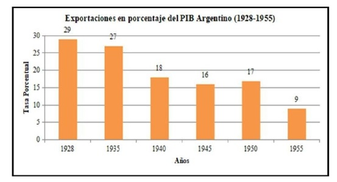
Gráfica 2. Exportaciones como Tasa % PIB
Fuente: Tomado de: Newland, C y Cuesta, E (2017). Peronismo y salarios reales: otra
mirada al período 1939- 1956. Pag 64.
Otro resultado fue una rápida expansión
industrial que no fue pensada a largo plazo, por
ende continuó una recesión dada por el deterioro
económico general y su balanza comercial.
Finalmente, se puede inferir que fue un gobierno con
momentos buenos y malos, de apoyo popular por
las medidas en favor de los salarios y trabajadores;
intervencionista; promotor de la producción
nacional, se desprendió de la influencia de los flujos
de la inversión extranjera al nacionalizar empresas
como los ferrocarriles británicos y pagó totalmente
la deuda externa. (Rojas, 2003).
Rojas, señala que la economía durante el
periodo vivió el ciclo de crecimiento, desaceleración
y reactivación. Inicialmente (1946-1949) de
corte popular y con respaldo en la base social. El
“Corporativismo Estatal” dio poder al Estado sobre
diversos sectores sociales y económicos. El aumento
del gasto público (34,3% del PIBen 1947-1948), hizo
que el Estado creciera, ampliando la contratación
y el empleo público. El control estatal nacional y
provincial y el poder sobre empresas nacionales,
lastimosamente generó círculos de influencia y
corrupción sobre los allegados al presidente; lo
cual estimuló la corrupción y con ella la mala
administración de las empresas públicas, marcadas
por la ineficiencia productiva. La expansión del
gasto y los mejores salarios provocaron presiones
alcistas sobre los precios, ocasionando una inflación
galopante, vía nuevos incrementos salariales,
que generaban nuevas alzas de los precios y así
sucesivamente. Ello llevó a una desaceleración de la
economía y a un menor crecimiento económico.
Ante la dura situación económica Perón debió
dar un golpe de timón a la economía, y a partir del
año 1949 se evidencia un Estado más parco en el
manejo monetario. Se inició así un programa de
estabilización, con recortes salariales, mejores
condiciones para los empresarios, incentivos a las
inversiones extranjeras y la devaluación del peso
para jalonar el sector externo. Ello requirió un
manejo austero del presupuesto nacional. Cambios
que harían retomar la senda del crecimiento a partir
del año 1952. El gobierno en sus últimos años de
mandato logró experimentar una recuperación y
crecimiento. La Gráfica No 3 muestra las mejoras
señaladas.

Gráfica 3
Fuente: Tomado de: Newland, C y Cuesta, E (2017). Peronismo y salarios reales: otra
mirada al período 1939- 1956. Pag 70.
Posterior a ello, llegaron los enfrentamientos y
disputas de la oposición hacia el gobierno y en 1955
derrocaron al coronel Perón. Entre 1955 y 1973
sucedieron nuevamente mandatos militares. Estos
años en el poder sirvieron para marcar a Argentina
con el peronismo, como el movimiento político
social más importante del Siglo XX.
En el periodo de dictaduras la economía tuvo
un comportamiento bastante pobre y sucesivas crisis
económicas. Gracias a la mala situación del país
y a la inconformidad del pueblo, Perón volvería a
la presidencia entre octubre de 1973 y julio 1974 y
Posteriormente le sucedería María Estela Martínez
de Perón (Julio 1974-marzo 1976).
Pero nada volvería a ser como la época dorada
del peronismo. Durante el mandato de Isabel Perón,
Argentina sufría la crisis mundial generada por el
sector petrolero, afectando los ingresos nacionales
y derrumbando las finanzas públicas, sumado a un
incremento de la inflación del 24% al 182% para los
años 1974 – 1976 y para completar, un incremento
en las tarifas de servicios públicos, para reducir el
déficit fiscal (Rojas, 2003; Benítez, Mónaco, 2007).
Según Macías (2002) el peronismo, lastimosamente
concentró el poder en ciertos sectores del lado de
algunos particulares, dejando a un lado el principio
delEstado alservicio de todossus ciudadanos; grupos
minoritarios – entre ellos sindicatos - allegados al
poder, se beneficiaron de las
3.3 Argentina en las Dictaduras.
Juan Domingo Perón sale mediante golpe de
Estado en 1955 y se exilia en Paraguay. Posterior a
ello se le permitió regresar en 1973 en el gobierno
de Héctor Campora (Cárdenas, 2007). Llegó para su
segundo mandato hasta su muerte en 1974, luego le
siguió en el poder su esposa María Estela Martínez
de Perón. María Estela gobernó hasta el golpe militar
de Marzo 24 de 1976, quedando como presidente
al militar Jorge Rafael Videla (1976 – 1981) que
con su ministro de economía: José Alfredo Martínez
de Hoz, implementaron políticas que volvieron
atrás las reformas económicas del Peronismo con
la justificación de que los problemas del gobierno
anterior radican en la demagogia del populismo
(Ministerio de Educación, 2010)
El Gobierno de Videla se convirtió en una
maquinaria represiva, promulgando el terrorismo
de estado, la persecución, los desaparecidos y la
censura, se vuelven el pan de cada día. Los cambios
impulsados bajo el Proceso de Reorganización
Nacional tenía como objetivo estabilizar social y
políticamente al país (Benitz, Monaco, 2007).
Se lanza un plan económico dictado por Hoz y
respaldado por la junta militar en Abril 2 de 1976
según se muestra en la Tabla No 3.
Tabla III. Plan Económico Presidente Videla 1976
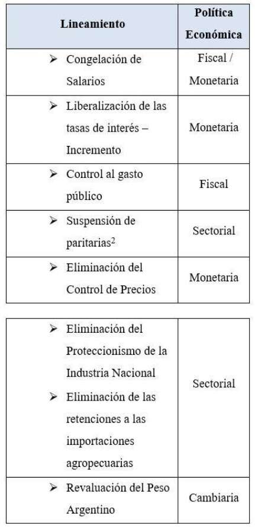
Fuente: Elaboración Propia, con base en información de Rojas (2003) y Benitez, Monaco
(2007)
Ante la poca transición del cambio de políticas
de corte librecambistas, los efectos fueron notables:
Una inflación difícil de manejar intentando ser
controlada con adquisición de deuda y reducción de
la emisión monetaria.
Gráfica 4. Comportamiento Deuda Externa 1970 – 1980
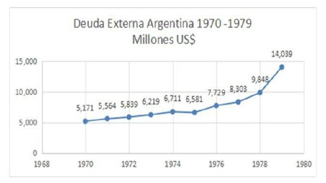
Fuente: Elaboración Propia. Con datos CEPAL de Girón (2009)
La búsqueda de productividad del sector
industrial, ocasionó el alejamiento del modelo de
sustitución de importaciones, que poco a poco
no solamente fue disminuyendo la participación
sectorial en el PIB, sino que dejó a un lado los
avances en la producción de bienes con importantes
compuestos de valor agregado nacional y aportes
de la ingeniería local, usados en la fabricación de
bienes durables y bienes de capital; para dar paso a
producción industrial liviana intensiva en recursos
naturales. La productividad industrial mejoró en
muy pocos sectores con capacidad de adaptación
e inversión tecnológica, pero el resultado final,
sería una real desindustrialización de la economía.
(Herrra, Tavosnaska 2011).
En materia de política cambiaria, en 1978 se
establece la reforma financiera y se liberan las tasas
de interés, se permite la salida de capitales al exterior
(Bona. L y Barrera. M, 2018).
Se produjo un gran endeudamiento estatal con
el mundial de ese año, el cual fue una campaña para
limpiarla imagen del país ante la realidad delrégimen
de terror impuesto. Otra medida que surge es “La
Tablita Cambiaria” la cual consiste en la fijación
del dólar mediante una serie de devaluaciones
programadas, reducción de los aranceles a las
importaciones y apertura sin restricciones al ingreso
de capital extranjero. Todo esto originó una bicicleta
financiera donde un inversor utiliza dólares para
comprar pesos, invierte los pesos en un instrumento como las LEBAC y al vencimiento vuelve a comprar
dólares con los pesos obtenidos, (Bona. L y Barrera.
M, 2018). Finalmente estalla la burbuja financiera
en 1981, cambian de dirigente a Roberto Viola
otro militar y la economía empeora. En este mismo
año la multipartidaria da un golpe dentro del golpe
(de estado) y se posiciona como nuevo dirigente
Leonardo Galtieri (1981-1982). Posteriormente lo
sucederá Reynaldo Bignonne (1982 -1983), éste
sería el último dictador argentino del Siglo XX.
4. Políticas Económicas de Principios de
Siglo XX
En el año 1982 se inician movilizaciones
obreras y el inconformismo del pueblo crece para
calmar los ánimos el gobierno toma la decisión de
desviar la atención y con ello ejecutan la maniobra
de la ocupación de las Maldivas, esto trajo 40 días de
combate contra las fuerzas Británicas, que significó
para el pueblo argentino pérdidas monetarias
considerables y de nuevo la pérdida geopolítica
de las islas. Es así como después de ésta estrategia
fallida sube al poder: Reynaldo Bignone de la mano
del economista Domingo Cavallo, con ellos llega
una nueva medida económica, la de nacionalizar las
deudas de las grandes empresas privadas, medida
que no mejora en nada la situación crítica del país (
Mónaco. C y Benitez. D, 2007)
Después de 7 años de varias dictaduras, gracias
a las marchas y protestas de la multipartidaria, se
logra convocar a elecciones para el 30 de Octubre de
1983. El presidente elegido RaúlAlfonsín, gobernará
en la nueva república argentina democrática en el
período 1983 – 1989. Su gran reto, sacar al país
y a sus ciudadanos de un largo periodo de duras
situaciones sociales, políticas y económicas que
dejaron las dictaduras. (Castiglioni, 1996; Martínez,
2016)
Según los Censos Nacionales de Población
del INDEC (2020) la población argentina bordeaba
los 28 millones de habitantes, las condiciones
socioeconómicas del país que Alfonsín toma no eran para nada prometedoras y su gente pasaba necesidades.
Según Rojas (2003) los datos macroeconómicos a la
fecha (1983) eran: Déficit Fiscal: 15%; inflación 382%; Deuda Externa superior a los US $40.000 millones.
Ante la presión de los trabajadores (huelgas en 1985 y cientos de miles de personas en las calles) y el
Partido
Justicialista frente a esta situación, políticas de corte populista se implementaron con la idea de buscar
también respaldo del pueblo. El Plan Austral fue la propuesta del Gobierno. (Rojas, 2003; Krokorian,
2010; Martínez, 2016). Las políticas económicas tienen cortes de expansión y contracción, es decir fueron
cambiantes en este periodo. Las políticas de Alfonsín se aprecian en la Tabla 4:
Tabla IV. Políticas Económicas Alfonsín
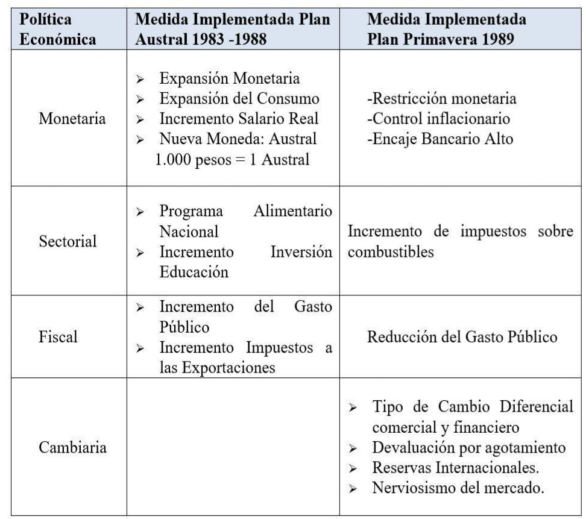
Fuente: Elaboración Propia. Con Información de Rojas (2003). Girón (2009)
Los cambios en las políticas económicas fueron plausibles durante 1985 y 1986 con crecimientos
positivos del PIB y caídas en la tasa de inflación. Sin embargo, la dicha duró poco y ya en 1987 los malos
resultados volvieron a florecer, especialmente la hiperinflación, caída del PIB (-2,6% y -7,5% para 1988
y 1989 respectivamente) un fuerte agotamiento de las reservas internacionales, caída de los precios
internacionales de los bienes de exportación; que sumados al alto endeudamiento, estancamiento económico,
caída en la inversión de capital y el déficit fiscal y
externo, tenían al país sumido en una crisis social y
económica profunda. Durante el período de Alfonsín
el país entró en mora con la deuda externa, el Peso
Argentino dió paso al Austral a quien le quitaron tres
(3) Ceros. La Gráfica 5 muestra el comportamiento
de la deuda pública para la década de los 80 ́s.
Gráfica 5
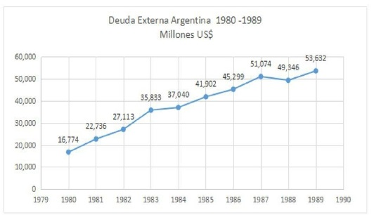
Fuente: Elaboración Propia. Con datos CEPAL de Girón (2009)
La hiperinflación, arrojó a las calles a los
ciudadanos, ocasionando protestas y desmanes. Son
los años de inicio a la implementación de políticas
económicas de corte liberal y, como respuesta a la
crisis latinoamericana de la deuda. (Martínez, 2017;
Krikorian, 2010).
Aunado a ello, los amagos de privatización
de empresas públicas como Entel y Aerolíneas
Argentinas, se sumó la crisis institucional respecto
al choque con las Fuerzas Militares, quienes
abogaban por no ser procesados ni juzgados por
las violaciones en épocas de dictadura, hechos que
generan incertidumbres en el poder y ocasionan
deterioro de la imagen presidencial; que a la postre
se reflejan en pérdidas políticas en los procesos
electorales y por consiguiente, poca maniobra en el
Congreso para sacar adelante reformas económicas;
que al final significaron la catástrofe electoral en
mayo de 1989 al perder el candidato oficial contra
Carlos Menen del Partido Justicialista. (Krikorian,
2010).
Inicialmente la victoria de Menem no era vista
con buenosojospor el establishment yla inestabilidad económica se profundizó posteriormente a las
elecciones, se preveía la vuelta a las ideas peronistas,
populismo e intervencionismo estatal. Finalmente,
las protestas populares de 1989, ocasionaron la
entrega anticipada del poder al nuevo presidente.
Nuevos cambios, en nuevas épocas se venían para
Argentina, hacia el fin de la Guerra Fría y la llegada
del Neoliberalismo y Globalización.
Menen llega al poder fortalecido por los
resultados electorales, que significaron igualmente
triunfos de las mayorías en el Congreso.
La influencia del Partido Justicialista sobre
la masa trabajadora también fueron un activo bien
valorado políticamente para poder hacer las reformas
y cambios en la economía Argentina, aunque a
la postre, también se consideró un traidor de las
ganancias sociales del pasado peronista (Rojas,
2003).
Menen inicia su presidencia con los
antecedentes negativos que había dejado los
programas intervencionistas del Alfonsín y la poca
implementación de mayorías legislativas, abrieron
una autopista de posibilidades para implementar
rápidamente la reforma al Estado y las políticas
económicas bajo la figura de la emergencia
económica. Con Decretos de Necesidad y Urgencia
(DNU) el nuevo gobierno implementó acciones
de mercado o llamadas neoliberales, receta que
impusieron de moda en aquella época los centros
de poder desde los Organismos Internacionales
como el Fondo Monetario Internacional y el Banco
Mundial, en sus llamados ajustes estructurales o de
estabilización. La apuesta era sacar a Argentina de la
Crisis a toda costa. Su escudero en el Ministerio de
Economía es el recordado Domingo Cavallo, quien
implementó el “Plan de Convertibilidad”.
Las acciones y medidas en favor de la clase
empresarial tradicional, el acercamiento a la
influencia norteamericana e inglesa, fueron mensajes
que rápidamente fueron bien vistas por la banca
multilateral, mejorando el acceso del país al crédito internacional y por consiguiente al endeudamiento;
para aterrizar en las reformas de corte liberal y de
mercado. Pero finalmente, la dependencia de los
capitales extranjeros y el creciente endeudamiento
externo, explican en gran medida la crisis del final
de la presidencia de Menem, que harían catarsis en
el presidente posterior.
Los datos de hiperinflación del año 1989 e
inicios de 1990 tenían en aprietos los ingresos de los
argentinos quienes veían deteriorados sus salarios
fuertemente día a día. La propuesta que puso un
punto alto en la lucha contra la hiperinflación fue el
Plan Bonex. Esa propuesta buscó limitar el retiro de
los depósitos bancarios y concentrar dicho valor en
un título de reconocida aceptación en el mercado,
de esta manera se operó una fuerte contracción
monetaria. La Tabla No 6 muestra las políticas
económicas del periodo 1989 -1995.
Tabla VI. Políticas Económicas Menem 1989 - 1995
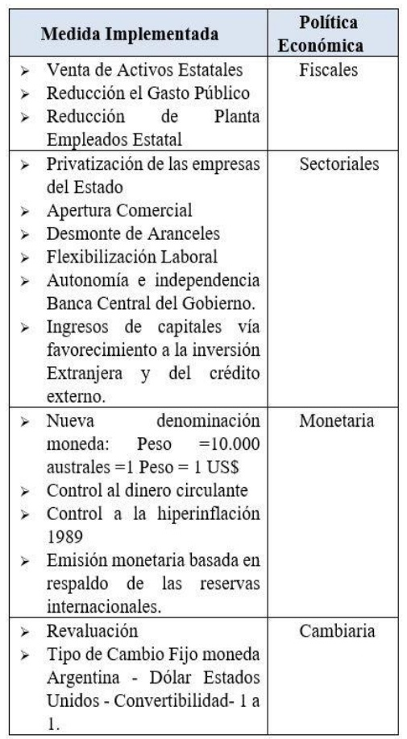
Fuente: Elaboración Propia con datos de (Aronskind, 2001; Martínez, 2017; Rojas 2003)
Los resultados de este periodo fueron positivos
para la economía Argentina; la inflación cayó al 3%
(comparativo contra el 3.000% de 1989) el ingreso
per cápita creció a US$ 7.450 (frente a los US$2.375
de 1989), crecimiento económico promedio del 7%
para 1990 -1994. (Martínez, 2017). Las mejores
condiciones económicas impulsaron el consumo
y llegada de inversionistas, lo cual acrecentó las
reservas internacionales.
Según Coats y Kosacoff (2011) por concepto
de inversión extranjera entre 1990 y 2000 llegaron
US $78.000 millones, que representa un crecimiento
anual medio de 20% para este periodo del acervo
de capital. Las transnacionales aprovecharon el
escenario para posicionar sus operaciones a nivel
local y regional. Gran parte de estos flujos llegaron a
comprar empresas estatales y privadas, estas últimas
con problemas de sostenibilidad por deficiencias
tecnológicas de punta, poco conocimiento de las
dinámicas de los mercados abiertos y sin capacidades
para hacer sus propias reconversiones al mundo de
competencia globalizada. La revaluación generó un
mejoramiento de la capacidad de compra hacia el
extranjero, ello promovió un estilo de vida de turismo
hacia el mundo y compras de bienes suntuarios
importados de la clase media y rica argentina, que
solo podría entenderse como una bonanza superflua
vista desde el consumo (Colcagno, 2015)
La característica productiva de una pyme
argentina,se asimila a la demuchas enLatinoamérica:
dueño - gerente, amplio catálogo de productos,
baja articulación con empresas del medio, poco
conocimiento de los mercados, baja innovación
y desarrollo tecnológico. Solo aquellas empresas
nacionales que se adaptan a la nueva realidad, han
logrado sobrevivir. Sin embargo, las estrategias de
expansión de las multinacionales y su absorción
de mercados, en muchos casos han comprado las
empresas que operan eficientemente con redes en
los mercados locales, en este sentido aprovechan el
backgraund y experiencia nacional, pero también
eliminan la competencia local, originando la
extranjerización de sectores claves en áreas como la
manufactura y los servicios.
Algunos efectos negativosfueron, el crecimiento
de la tasa de desempleo del 10,1% al 12,1% entre
1993 y 1994. La apertura comercial conlleva a la
caída en la producción agrícola e industrial dado
la revaluación del peso argentino y al desestímulo
de las exportaciones, lo que significó reducción en
las reservas internacionales vía comercio exterior.
Los empresarios se vieron enfrentados a recurrir a créditos para cubrir sus faltantes. Para sostener
la paridad del tipo de cambio en el modelo de
convertibilidad el país recurrió a grandes sumas
de endeudamiento externo, acción que favorecía
los intereses de la banca multilateral y al sector
financiero rentista y especulativo que llega a las
economías emergentes. Así lo corroboran los pactos
y sus extensiones Stand-By con el FMI entre 1991
y 1998 con sus famosas recetas: fiscales, laborales,
financieras, de seguridad social (Girón, 2009). Pero
en el lado contrario se observaba una caída en los
ingresos de los trabajadores. (Aronskind, 2011).
En 1995 Menem gana de nuevo las elecciones
y obtiene nuevamente mayorías en el Congreso.
Sin embargo, en un mundo cada día más expuesto
por la globalización financiera y los flujos de
capitales transnacionales y multinacionales, la
interdependencia económica es cada día más
latente y hace muy sensible la exposición de
economías emergentes a los choques económicos
internacionales.
El contexto internacional en los años noventa
golpeó fuertemente las economías de las naciones
emergentes. La crisis del “efecto tequila” de 1994
sucedido en México, arrastró sus efectos sobre otras
economías emergentes como la Argentina. Pero
además, las crisis asiática de 1997, la crisis rusa de
1999, desaceleración de la economía brasileña a
finales de 1999. Todo lo anterior muestra un entorno
complejo y de difícil maniobra interna para los
economistaslocales, quienes poco pudieron hacer, ya
que estaban amarrados al modelo de convertibilidad
y a un escenario internacional que presionó las tasas
de interés y los spreads de la deuda en el crédito
internacional en las economías golpeadas. Fueron
situaciones que afectaron negativamente a las
tasas de los créditos locales e internacionales, con
repercusiones sobre el estancamiento económico.
(Macías ,2002; Cortés, 2003; Hoyos, 2011; García,
2016).
Los impactos de las crisis en los países
emergentes, llevaron a Argentina al alza las tasas de interés, como una estrategia para retener los flujos
de inversión extranjera en estos países, también
la economía se vio afectada por la caída de los
precios de los bienes de exportación, factores claves
para la desaceleración económica. Ya para 1998 la
recesión de la economía Argentina se manifiesta
en alto desempleo, deflación, poca confianza en el
crecimiento del PIB, y por consiguiente caída en los
ingresos fiscales, que termina por afectar el acceso a
créditos. Todo ello llevó a un aumento de los retiros
de losfondos bancarios y salida de capitalesforáneos.
Esto ocasionó que se impusieran restricciones a
los fondos de recursos nacionales como a giros al
exterior. Los efectos de este cóctel de situaciones
tuvieron consecuencias sobre el aparato productivo;
y a la muerte del capital empresarial nacional vía
privatizaciones, se suma la muerte empresarial de las
pymes. (Coatz, Diego; Kosacoff, Bernardo, 2011).
Durante la administración de Menem son
recordados la política restrictiva del gasto público,
con recortes en la inversión de sectores sociales
como salud, educación, incremento en las tarifas de
servicios públicos, entrega del patrimonio productivo
nacional a las multinacionales, las privatizaciones de
la banca y los fondos de jubilados y pensiones. Los
efectos sociales y económicos van desde incremento
de la pobreza, indigencia, desempleo, mayor
desindustrialización y endeudamiento externo.
(Ministerio de Educación de la Nación, 2015).
Entre 1998 y 2001 el panorama volvió entonces
a la volatilidad e incertidumbre, que impactó
negativamente en el entorno empresarial y de
inversiones y una aversión al riesgo por nuevas
inversiones. La economía presentaba signos de alto
endeudamiento y fuertemente afectada por los hechos
mundiales. A nivel interno, no podría incentivarse el
aparato productivo vía devaluación, debido al patrón
de convertibilidad, ni vía expansión monetaria, por el
mismo patrón, tampoco expansión del gasto público,
por los altos costos de la deuda. Paradójicamente, el
milagro de la caída de la inflación y la llegada de la
deflación, terminó por desestimular la producción.
La respuesta a la situación fue más endeudamiento externo, con una variación del 200% al pasar de los
US$48.676 millones a más de US$150.000 millones
entre 1990 y 2001, así se aprecia en la Gráfica 6.
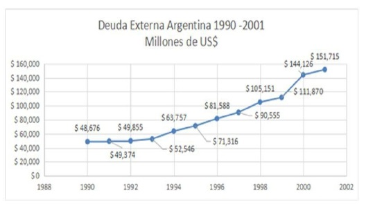
Gráfica 6
Fuente: Elaboración Propia. Con datos CEPAL de Girón (2009)
La dependencia del capital foráneo y los
créditos internacionales, para sostener el régimen
de convertibilidad, soportan parte de la crisis
económica argentina; es decir que lo que fue la
solución a la hiperinflación y estancamiento de los
años 80’s, posteriormente causó el mismo deterioro
en la situación del país, por la alta dependencia de los
flujos monetarios internacionales y la desaparición
de la política monetaria como instrumento para
actuar ante los problemas económicos del país.
Cabe recordar que los motivos por los cuales un país
recauda dólares en: exportaciones, venta de activos
estatales – Privatización -remesas provenientes del
extranjero de los particulares o empresas, crédito
externo público o privado, o inversión extranjera.
La medida de convertibilidad sólo permitía imprimir
moneda si crecían los dólares por cualquiera de las
anteriores vías descritas. Pero lo que sucedía en la
economía al final del periodo de Menem era caída
en las ventas al mundo, salida de dineros de los
particulares y empresas, fuga de inversión nacional
y extranjera y cierre de los créditos externos. Por
consiguiente ante la imposibilidad de maniobra
interna en política monetaria y cambiaria, la otra
opción era actuar con la política fiscal.
Las privatizacionesfueron pan para hoy, hambre
para mañana. Diluidos los recursos fiscales efecto de la venta de activos públicos, el Estado debió recurrir
al endeudamiento para cubrir la falta de ingresos
públicos, lo cual representó al final altos costos y
una carga alta para el gasto estatal.
Y a todo lo anterior, se sumó la crisis
institucional vía escándalos de corrupción, que
pusieron fin al matrimonio de Menem con los
argentinos, especialmente los oscuros negocios de las
privatizaciones, considerados nefastos, por la entrega
del patrimonio público y los impactos sociales en
la subida de las tarifas de agua, luz, gas, telefonía
y transportes, vía desaparición de los subsidios y
por la pérdida de la capacidad de consumo de los
argentinos y el crecimiento alarmante del desempleo
y la informalidad.
“En consecuencia, el político que sin duda había
sido el principal motor del proceso de reformas de la
Argentina se convirtió ahora en su mayor lastre”
(Rojas, 2003 Pág. 104).
Hacia 1999 la situación del país era nuevamente
caótica en lo económico y social. Como se expresó
anteriormente la tasa de cambio y la inflación
estaban bajo control. Pero la contracción monetaria
y el panorama internacional, tuvieron un efecto
sobre la demanda agregada, sobre la producción y
por consiguiente sobre el empleo. Para este año, el
desempleo más la informalidad laboral bordeaban
el 30%; ello tuvo repercusiones sobre la expansión
de la pobreza y la concentración de la riqueza. La
pobreza no había sido un gran referente de la sociedad
argentina, pero ahí radica su importancia, en la caída
en los ingresos y la menor capacidad de acceso al
bienestar, cosa nueva para los nuevos pobres.
Para el mes de mayo de 2001 el 36% de los
argentinos era contabilizado como pobre, con
mayores índices en otras regiones del país. Cifra
muy superior al 5% de inicios de los 80´s. No cabe
duda que la hiperinflación el mayor miedo de los
argentinos, quebró el bienestar, al punto que hacia 1989 la pobreza era del 47,4% en Buenos Aires.
Por eso, los argentinos cobijaron las duras medidas
fiscales y monetarias de Menem, quien logró un
quiebre en la tendencia del indicador en los años 92
-93 y 94. Pero la contención de la pobreza no fue
sostenible en el tiempo. (Rojas, 2003).
El segundo gobierno de Menem no terminó
en una historia rosa. En diciembre de 1999, ante
la división del peronismo y el Partido Justicialista,
es decir del menemismo; llega a la presidencia
Fernando de la Rúa, candidato de la Unión Cívica
Radical –UCR; – quien se presentó a elecciones con
el proyecto “La Alianza por el Trabajo, la Justicia y
la Educación con el apoyo del Frente País Solidario –
FREPASO- constituido por peronistas contradictores
de Menem. De la Rúa gobernó (10 diciembre 1999
– 21 diciembre 2001) bajo una gran inestabilidad
económica e inestabilidad política – De la Rúa no
logró en las elecciones mayorías en el Congreso-.
Sus problemas de institucionalidad se vieron
afectados por el envío de negativos mensajes
al mercado, esencialmente por los destapes de
corrupción hacia el Congreso como estrategia para
la aprobación de las nuevas medidas económicas
(hecho que ocasionó la salida del FREPASO de
la alianza, creando una gran inestabilidad en el
gobierno) (Macías, 2002). En lo económico – de
la mano nuevamente del Ministro de Economía
Cavallo- la implementación de medidas restrictivas
siguió siendo la receta: Ajuste fiscal, déficit cero y
control a los gastos; que conlleva a una reducción de
los salarios y en ingresos de los pensionados. Esta
situación, la presión social y el descontento popular,
llevaron nuevamente al triunfo del Peronismo
en las elecciones del Congreso en el 2001 y por
consiguiente una menor capacidad de maniobra del
ejecutivo en sus tareas ante el legislativo. (Bonnet,
2002).
4.1 El Corralito
El corralito, esla expresión másrecordada por la
crisis social y económica de aquellos primeros años del Siglo XX en laArgentina. El presidente De la Rúa
intentaba tranquilizar los mercados y tranquilizar el
descontento social. La Tabla No 7 enseña algunas
medidas de las políticas económicas, contradictorias
porque no se puede servir al Dios mercado y el
Dios Pueblo en medio de tanta inestabilidad, en este
periodo se sucedieron tres ministros de economía –
Machinea, Lopez, Cavallo.
Tabla VII. Políticas Económicas Fernando de la Rúa (1999 – 2001)
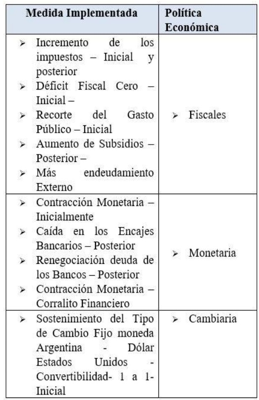
Fuente: Elaboración Propia
Durante los años 2000 y 2001 se continuó
con el apoyo financiero del FMI, respaldo que le
permitía obtener otros accesos a fuentes financieras
internacionales. La situación de crisis fiscal, alto
endeudamiento e incremento de los impuestos,
se buscaba: El déficit cero: aumentar los ingresos fiscales; reducir del gasto público. Todo pretendía
más dinero para cubrir sus obligaciones financieras
con el crédito externo y cumplir los compromisos
con el FMI (Girón 2009). La idea era dar confianza
a la economía; sin embargo las finanzas provinciales
no eran tan disciplinadas y ahondaron la crisis de
deuda interna con los bancos. Ante esta situación el
gobierno autorizó renegociar las deudas públicas de
corto por bonos de largo plazo, cuyo propósito era
dar manejo a la deuda, postergando sus pagos.
De acuerdo con Macías (2002) las políticas en
materia económica tuvieron buenos resultados en
materia de reducción del déficit fiscal en US $7.000
millones al pasar de US$76.000 millones del año
1999 a US $69.000 en el año 2001. Pero la situación
era tan difícil que el nerviosismo era alto por parte
de los inversionistas locales y extranjeros, Cavallo
intentó dejarla convertibilidad peso – dólar, poniendo
un nuevo actor en escena: El Euro, pero la propuesta
no avanzó. La idea era mejorar las condiciones
fiscales para bajarle presión a la demanda de dólares,
mantener en el mercado a los inversionistas, y que
ellos permitieran quitar presión igualmente sobre las
tasas de interés y reactivar la economía.
Según el portal Norteamérica (2017) entre
enero y noviembre de 2001 se extrajeron de los
bancos más de US $18.000 millones. La fuga de
capitales llegaría a los US$ 15.000, agotando las
reservas internacionales y poniendo en aprietos
los compromisos con la banca internacional, el
descalabro de la balanza de pagos está total. Además
a todo lo anterior, se le sumó el nerviosismo interno
y la alta demanda por los depósitos bancarios de
los ahorros, las personas hacían largas colas en los
bancos para sacar su plata. Así el 1 de diciembre
de 2001 para contener la extracción de los dineros
de los bancos, se decretó el corralito financiero:
Que limitaba a los argentinos a retirar US$ 1.000
mensuales, representados en solo $ 250 semanales.
También se prohibió hacer transferencias hacia
el extranjero; y así evitar la iliquidez del mercado
financiero. A lo que Cavallo llamó: Acciones para
frenar los ataques especulativos. El control financiero se propuso inicialmente por 90 días, se esperaba
así que para el 1 de marzo de 2002 ya las personas
podrían disponer de su dinero, pero no fue así.
Este cierre bancario, donde las personas solo
podían gastar a través de sustarjetas o depósitos, pues
estaban prohibidos los retiros en efectivo; exacerbó
el descontento popular. El Estado estaba poniendo
trabas a los recursos de la gente, descontento
popular que se manifestó en las calles, las protestas
terminaron con muertos en las avenidas, fueron 38 las
víctimas que la argentina lloró y cientos los heridos.
Época en que a pesar de tener dinero en los bancos,
el efectivo escaseaba, las pequeñas transacciones
eran imposibles, el consumo se contrajo y el papel
moneda era un tesoro que se guardaba para alguna
urgencia (el País, 25 noviembre de 2002).
Luego de más de tres meses de descontento
y manifestaciones, el momento neurálgico se
presentó el 19 de diciembre de 2001, que a pesar
de la declaratoria de estado de excepción; hubo la
masiva toma de ciudades importantes por parte de la
gente, cacerolazos, marchas y manifestaciones que
terminaron en desorden y saqueos a establecimientos
públicos, del comercio y la banca. Los válidos
reclamos populares eran por trabajo, alimentación,
salud, educación, contra el corralito, la corrupción
y la violencia de Estado. Todo ello obligó a la
renuncia de Cavallo y el gabinete ministerial. El 20
de diciembre la Casa Rosada estaba rodeada por un
pueblo ardido. De la Rúa abandonaría la presidencia
en helicóptero.
Una mirada de la nueva realidad social la relata
(Grimson, 2018):
“ Surgieron y se expandieron grupos de
desempleados para exigirle al Estado trabajo y
planes de empleo y para garantizar su subsistencia
cotidiana. Estos potentes movimientos de
trabajadores desocupados protestan bloqueando
rutas y puentes con piquetes, y por eso se los conoció
como «piqueteros». Surgieron nodos de redes de
trueque, que buscaban paliar la carencia de dinero necesario para el mercado a través del intercambio
de bienes o saberes, en un circuito informal que
en su auge involucró a dos millones de personas.
Se expandieron los comedores populares que,
obteniendo insumos del Estado y eventualmente de
donaciones, garantizaban un plato de comida para
niños y adultos al borde de la indigencia. Surgieron
asambleas barriales, generalmente en barrios de
clases medias, cuya movilización no respondía solo a
una necesidad económica de los propios asambleístas
(no eran necesariamente ahorristas estafados, ni
indigentes, ni desempleados), sino básicamente a
la crisis político-institucional de representación.
También ha habido unos dos centenares de empresas
recuperadas por sus trabajadores después de
su quiebra, cierre o abandono por parte de sus
anteriores propietarios.”
Pero la crisis no paró allí, ¿Quién se haría cargo
ahora del barco? Ante el vacío vicepresidencial por
la retirada del FREPASO de la Alianza, Ramón
Puerta, asumiría momentáneamente la presidencia
del Senado. Por decisión de la Asamblea Legislativa
el 23 de diciembre de 2001 Adolfo Rodríguez Saa,
sería designado nuevo presidente, el cual tendría 90
días para convocar a elecciones.
Rodríguez Saa, sería quien declara el default de
la deuda, monto de superior a US$100.000 millones
que en las condiciones vigentes eran imposibles de
cumplir. Esto provocó divisiones en el legislativo
y su mandato solo llegó al 23 de diciembre, hecho
que llevó al retiro del apoyo del FMI. El presidente
de la Cámara Eduardo Camaño asumió, y a los días
siguientes designó la presidencia a Eduardo Duhalde,
quien a partir del 02 de enero de 2002 sería el nuevo
presidente de los australes.
Conclusiones
En este artículo se han mencionado los sucesos
históricos en materia económica, social y política
de la República de Argentina durante los siglos
XIX y XX, cuya situación crítica a lo largo del
tiempo, ha sido la principal herramienta de muchos profesionales dotados en su materia para analizar las
consecuencias de cada una de las decisiones tomadas
por los gobiernos, con el fin de mejorar su posición
socio-política y hacer de este una mejor nación.
Como se ha mencionado anteriormente,
Argentina ha sido un país muy apetecido a nivel
regional e internacional, sencillamente por su
fuerte y sólida economía, pero más allá de ello, sus
importantes sectores económicos como el primario
y terciario (agroindustrial, servicios) han sido las
principales columnas que solventan a tal nación, pero
ha sido relevante saber que a lo largo de los años,
la situación socio-política-económica ha venido
drásticamente decayendo como resultado del mal
manejo que le han dado a las políticas económicas
por parte de los gobiernos y empresas tanto privadas
como públicas.
Argentinahatenidoquepasarporunprocesomuy
complejo, en el que una de sus etapas, por ejemplo,
tuvo que independizarse de las colonias europeas a
principios del siglo XIX, y de igual manera, poder
aumentar su población por medio de sus sectores
económicos para generar empleo y sostenibilidad
social. Como se ha observado en el presente artículo,
el pueblo argentino, vivió un fuerte crecimiento
económico, debido a su fuerte industrialización del
sector primario, en donde su estabilidad política era
sólida, había calidad de vida, y se ubicaba como
uno de los países más prósperos a nivel regional.
Pero esta situación no pintaba de la misma manera,
debido al fuerte contagio internacional que se generó
en 1929, como la recesión económica, que causó
drásticamente problemas al aparato productivo de
la nación, tanto así que a partir de allí, Argentina
se veía en la obligación de trazar objetivos a largo
plazo para cumplir con su objetivo de la reactivación
económica.
Igualmente se menciona, que la nación tuvo
un buen periodo de sostenibilidad política a causa
del peronismo que pese a todos los obstáculos
como inestabilidad económica en ese entonces, el
líder político supo desarrollar estratégicamente la situación hasta su exilio y golpe de estado en 1956.
A medida de su transcurso político y económico,
la situación de Argentina era totalmente diferente
a principios del siglo XX, es decir, su situación
años tras año empeoraba, sus políticas cambiantes
por parte de los gobiernos, no daban una confianza
sólida a los ciudadanos
A mediados del año 1980, Argentina, tenía
una fuerte deuda externa y generaba desconfianza
en el panorama internacional de modo que cada
vez que intentaba solventar tal deuda, empeoraba
y su economía decaía a causa del fuerte nivel de
corrupción de las empresas y gobierno; sumado
al mal manejo de su políticas económicas (fiscal,
sectorial, comercial, monetaria, cambiaria.).
A principios del siglo XXI, argentina aún no
se había recuperado de su contagio económico y
este país llegó a un punto de desesperación políticasocial-económica, tenía fuertes problemas como
(hiperinflación, deuda externa, inestabilidad política
y social) y todo por causa de las malas estrategias
y que hoy día, el pueblo argentino como tal, no ha
podido recuperarse del todo de su triste situación.
En fin la misma odisea para el pueblo latino,
la prosperidad con la que destello Argentina alguna
vez se opacó, con los intereses irracionales de sus
dirigentes, básicamente el querer ir en contra del
gobierno anterior, volcando los planes y proyecciones
de cada mandato, era un reinicio en cada periodo
que sin duda no funcionaba, solo fueron medidas
desesperadas basadas en el ansia de poder. Sin
duda los errores fueron muchos, se supone que un
país debería tener memoria y evitar el mismo ciclo,
pero los hechos hablan y eso no es lo que sucede,
no se habla de dictaduras ahora, pero tal vez siguen
las sombras de las malas maniobras políticas que
consumen lentamente al país.
La elaboración de este escrito no solo sirve para
entender los hechos históricos que influyeron en la
decadencia de Argentina, sino que sirve de ejemplo
para Colombia, en donde si bien las situaciones han sido diferentes, no está demás observar y analizar
las acciones tomadas en el país de la Patagonia,
porque la polarización política por ejemplo empezó
a tensar el ambiente en el país argentino y Colombia
ha mostrado señales similares en ese aspecto, esto
no es una sentencia para repetir la historia, es un
llamado al análisis de las circunstancias.
Las lecciones que trae la historia económica de
Argentina en el Siglo XXI, traerán muy seguramente
nuevas realidades, las cuales muy también serán
objeto de un estudio posterior, pues la situación
austral en el año 2020 sigue siendo crítica. ¿Qué ha
pasado en los últimos 20 años?
Referencias
- Aronskind Ricardo (2011). Las Causas de la Crisis
de 2001. A diez años de la crisis de 2001: Memoria
del Derrube. En UNICEN divulga. Universidad
Nacional del Centro de la Provincia de Buenos
Aires. Extraído desde https://www.unicen.edu.ar/content/las-causas-de-la-crisis-de-2001
- Barbagallo, Lionerl; Rougier, Marcelo (2017).
La Política Monetaria y Crediticia durante el
Peronismo: Un análisis de la Estadística. En
Revista Ejes de Economía y Sociedad. Año 1
Número 1. Julio – Diciembre. Universidad de
Entre Ríos. Extraído desde https://ri.conicet.gov.ar/bitstream/handle/11336/39519/C O N I C E T _ D i g
i t a l _ N r o . 3 e c c 8 3 a 6 -4 8 f 2 - 464b - a d 5 8 - e 8 4 d 0 4 b f 4 0 4 a _ B
.pdf?sequence=5&isAllowed=y
- Barrera, Mariano; Bona, Leandro (2018). La fuga de
capitales en la Argentina reciente. (1976-2018).
Revista Facultad de Ciencias Económicas:
Investigación y Reflexión. Vol. XXVI (2),
Diciembre, 7-32 Extraído desde https://www.researchgate.net/publication/330128552_La_fuga_de_capitales_en_la_Argentina_reciente_1976-2018
- Barry,Carolina.(2010). La conformación política del Peronismo 1945- 1955. En Revista de Historia
Iberoamericana. Vol 3 (N°2), 10-21. Extraído
desde
- Benitez, Diego; Monaco, Cesar. (2007). La
dictadura militar 1976-1983. Obra publicada
en el libro: Kessler, G y Luzzi, M, Problemas
Socioeconómicos Contemporáneos, Buenos
Aires, Universidad Nacional del General
Sarmiento. Extraído desde https://www.riehr.com.ar/archivos/Educacion/La%20dictadura%20militar%20Monaco%20Benitez.pdf
- Bonnet, Alberto (2002) La Crisis de la
Convertibilidad. En Revista Tehomai Núm 99.
Buenos Aires, Argentina. Extraída desde https://
www.redalyc.org/pdf/124/12490103.pdf.
Cárdenas, Luis. (2007). Perón: Del exilio al poder.
Revista Andaluza de Ciencias Sociales. N°7 Págs
165 -181. Extraído desde https://dialnet.unirioja.es/servlet/articulo?codigo=2737232
- Castiglioni Franco (1996). Argentina. Política y
Economía en el Menismo. En Revista Nueva
Sociedad # 143. Mayo - Junio Pág 6 -14
- Coatz, Diego; Kosacoff, Bernardo (2011) Fortalezas
y Desafíos de la Política Económica Argentina
en el marco de la Crisis. En Revista Proyecciones
Económicas. No 1 Noviembre. Buenos Aires.
Argentina. Extraído desde: Colcagno, Alfredo
(2015) La Situación Económica de Argentina.
En EconomiaUnam Vol 12 Núm 36 Pág 16 – 33.
Universidad Autónoma Nacional de Mexico.
Extraído desde https://www.redalyc.org/articulo.oa?id=363542904002
- Comisión Económica para América Latina (2020).
Base de Datos y Publicaciones Estadísticas
CEPALSTAT. Argentina: Perfil Nacional
Económico. Extraído desde https://estadisticas.cepal.org/cepalstat/Perfil_Nacional_Economico.html?pais=ARG&idioma=spanish
- Cortes, Roberto (2003). La Crisis Argentina 2001-
2002. En Cuadernos de Economía. Volumen 40
No 112. Santiago de Chile. Extraído desde http://dx.doi.org/10.4067/S0717-68212003012100049
- El País (2002) Las víctimas del Corralito.
Edición digital de la sección Economía
del 25 de noviembre. Extraído desde
https://elpais.com/
diario/2002/11/25/economia/1038178806_850215.html
- Garcia, Clara (2016) Corralito en Argentina: Una
Aproximación a la historia de la economíaActual.
En Revista E Innova BCUM # 56. Extraído desde
http://webs.ucm.es/BUCM/revcul/e-learninginnova/179/art2494.pdf
- Girón, Alicia (2009) Plan de convertibilidad,
consejo monetario y fracaso de la dolarización.
Pág. 65 -84. Publicado en Libro: Argentina: su
recurrente inestabilidad financiera. CLACSO
Universidad Nacional Autónoma de México.
Instituto de Investigaciones Económicas.
Extraído desde http://biblioteca.clacso.edu.ar/clacso/coediciones/20160304044520/04.pdf
- Gonzales, María (2015) La Paz de Utrecht y su
impacto en el mundo atlántico. Una aproximación
a partir del caso del Río de la Plata. En Anuario
de Estudios Americanos, 71, 1. España.
Extraído desde https://www.researchgate.net/publication/
- Grimson,Alejandro (2018)Argentina y sus Crisis. En
Revista Nueva Sociedad. Número 273. Extraído
desde https://nuso.org/articulo/argentina-y-suscrisis/
- Herrera, German; Tavosnanska, Andrés
(2011). La Industria Argentina a comienzo
del Siglo XXI. En Revista Cepal 104.
Extraído desde https://repositorio.cepal.org/bitstream/handle/11362/11461/104103122_es.pdf?sequence=1&isAllowed=y
- Hoyos, Daniel (2011). La Crisis de 2001, una visión
retrospectiva. A diez años de la crisis de 2001:
Memoria del Derrube. En UNICEN divulga.
Universidad Nacional del Centro de la Provincia
de Buenos Aires. Extraído desde https://www.unicen.edu.ar/content/la-crisis-del-2001-unavisi%C3%B3n-retrospectiva
- Instituto Nacional de Estadísticas y Censos (2020)
Censo Nacional Agropecuario 2018. Resultados
preliminares Agricultura. Argentina. Extraído
desde https://www.indec.gob.ar/ftp/cuadros/economia/cna2018_resultados_preliminares_agricultura.pdf
- Instituto Nacional de Estadística y Censos de la
República de Argentina (2019). Estadísticas de
Población. Extraído desde https://www.indec.gob.ar/
- Kosacoff, Bernardo (1993) La Industria Argentina.
Un proceso de Reestructuración Desarticulada.
En Cepal Documento de Trabajo No 53. Extraído
desde https://repositorio.cepal.org/bitstream/handle/11362/2747/1/LCbueL135_es.pdf
- Krikorian Marcelo (2010). La hiperinflación
1989/1990. Aportes y Reflexiones sobre un
episodio que marcó la historia Argentina. En
Revista:Anales de la Facultad de Ciencias
Jurídicas y Sociales; año 7, no. 40. Facultad
de Ciencias Jurídicas y Sociales. Universidad
Nacional de la Plata.
- Macías, Hugo. (2002). La Crisis de Argentina:
Origen, evolución, lecciones. Revista Semestre
económico. Vol 5(N°10).
- Martinez, Christopher (2017). Sobreviviendo la
CrisisArgentina 1983 -2001. En Revista Estudios
Interanacionales No 186. Instituto de Estudios
Internacionales. Universidad de Chile.
- Ministerio de Educación de la Nación Argentina.
(2015). Historia Argentina. Argentina, primera
edición. Extraído desde http://www.bnm.me.gov.ar/giga1/documentos/EL006510.pdf
- Ministerio de Educación de la Nación Argentina.
(2010). Pensar la Dictadura: Terrorismo de
Estado en Argentina. Argentina. Presidencia de
la Nación.
- Ministerio de Asuntos Exteriores, Unión Europea y
de Cooperación ( 2019). Ficha País Argentina.
Extraído desde http://www.exteriores.gob.es/Documents/FichasPais/ARGENTINA_FICHA%20PAIS.pdf
- Montagut, Eduardo (2013) El asiento de Negros. En
Revista los ojos de Hipatía. Valencia. Extraídos
desde https://losojosdehipatia.com.es/cultura/historia/el-asiento-de-negros/
- Newland, C y Cuesta, E (2017). Peronismo y salarios
reales: otra mirada al período 1939- 1956.
Investigación y Ensayo. N°64. 75-98
- Notiamérica (2017) Qué fue y porqué se produjo
el corralito en Argentina hace 15 años? Edición
digital del 3 de diciembre. BuenosAires. Extraído
desde https://www.notimerica.com/cultura/noticia-fue-produjo-corralito-argentina-hace-15-anos-20161203071948.html
- Rojas, Mauricio (2003). Historia de la Crisis
Argentina. Centro para la Apertura y Desarrollo
para América Latina. Argentina. Extraído desde
https://www.cadal.org/libros/pdf/Historia_de_la_Crisis_Argentina.pdf
Subsecretaria de Informaciones. (1953). Segundo
Plan Quinquenal. Buenos Aires, Argentina.
Presidencia de la Nación. Extraído desde http://cdi.mecon.gov.ar/greenstone/collect/planesde/index/assoc/HASHf8f1.dir/doc.pdf

 Magister,
eimeralexisbr@ufps.edu.co,
Magister,
eimeralexisbr@ufps.edu.co,  ORCID:
0000-0003-3733-6424.
Escuela superior de Administración pública, Arauca, Colombia.
ORCID:
0000-0003-3733-6424.
Escuela superior de Administración pública, Arauca, Colombia.